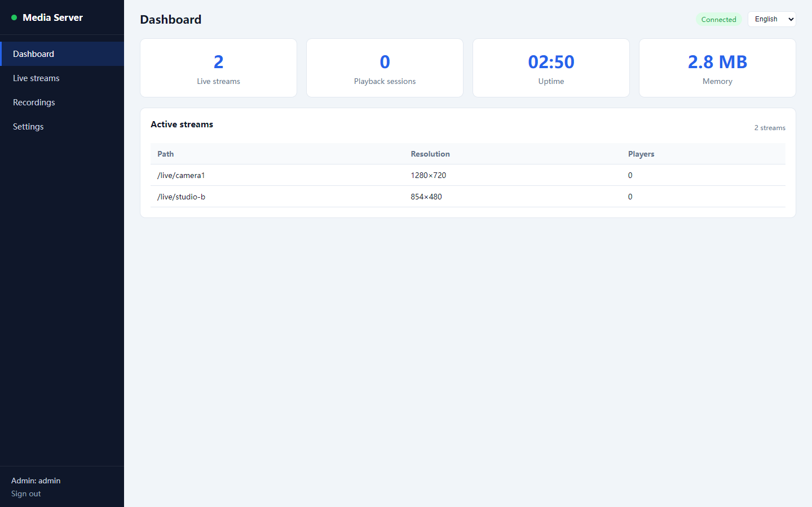

Implemented in PHP
Built on the Workerman event loop. The RTMP handshake, FLV tag parsing and fMP4 muxing are written in PHP, with no FFmpeg transcode process or C++ extension.
PHP 8.2+ · Workerman · MIT
RTMP / HTTP-FLV ingest, RTMP / HTTP-FLV / WS-FLV playback, fMP4 recording with millisecond-precise replay, plus a bilingual admin console. No FFmpeg transcode process or Node runtime required.
$ composer install
$ php start.php start
rtmp server tcp://0.0.0.0:1935 start
http server 127.0.0.1:18080 start
$ ffmpeg -re -i demo.mp4 -c:v libx264 \
-c:a aac -f flv rtmp://127.0.0.1/live/stream
▸ stream attached — open /admin/ to watchMedia path
One stream can be pulled by several protocols at once, recorded while it is being pushed, and reviewed later for any time range.
rtmp://host:1935/app/stream
POST /app/stream
RTMP push, or POST raw FLV data
FLV parsing · GOP cache · fan-out · muxing
RTMP
HTTP-FLV
WS-FLV
fMP4 segments
SQLite index
GET /playback/live/stream?start=1788165249473&end=1788165554005
Sliced across segments and re-muxed on the server, ready for <video>
Scope
Covers ingest, delivery, fMP4 recording, time-range replay, the admin console and automated tests.
Built on the Workerman event loop. The RTMP handshake, FLV tag parsing and fMP4 muxing are written in PHP, with no FFmpeg transcode process or C++ extension.
The same stream is served over RTMP, HTTP-FLV and WS-FLV, with disableAudio / disableVideo / disableGop query filters.
Handles both Enhanced RTMP (codecId=0 + hvc1) and legacy codecId=12 HEVC framing, with AAC audio.
Fragments and segments are cut on keyframe boundaries. Every .mp4 carries a complete moov, so it plays standalone and parses in ffprobe and browsers.
The /playback endpoint slices across segments and starts at the keyframe at or before start; mdat is streamed in chunks, so memory does not grow with clip length.
Dashboard, live preview, recording list with time-range replay and settings, with token auth and a Chinese/English switch.
Data-driven cases cover push → record → replay → decode verification. CI runs syntax checks and smoke tests on PHP 8.2 / 8.3 / 8.4.
Scripts, raw data and analysis for five load scenarios ship with the repo and can be reproduced on other machines.
Console
A plain-JS single page app with no build step, served by the same process.

Benchmarks
Test setup: AMD Ryzen 9 9900X · Windows · PHP 8.4 · 1080p30 @ 4096 kb/s · ffmpeg -c copy
Single-process ceiling on the event loop, 100% connections held
1.4 GB memory, roughly 1.17 MB of GOP cache per stream
The peak that stays healthy: 98.5% CPU, zero dropped frames
Pull-side memory, about 36 MB in total at 1000 connections
| Push | Pull | CPU | Memory | Held | Dropped |
|---|---|---|---|---|---|
| 50 | 500 | 57.4% | 95 MB | 100% | 0 |
| 100 | 500 | 60.5% | 158 MB | 100% | 0 |
| 200 | 500 | 68.9% | 288 MB | 100% | 0 |
| 500 | 500 | 98.5% | 661 MB | 100% | 0 |
On Windows, install the event extension. The default select loop does not reject connections past ~253 — the whole process stalls, and even the HTTP API stops responding.
Quick start
Requires PHP 8.2+ and Composer. ffmpeg is only needed for pushing and for the E2E suite.
composer installphp start.php startRTMP listens on 1935, HTTP / WebSocket on 18080.
ffmpeg -re -i file.mp4 -c:v libx264 -c:a aac -f flv \
rtmp://127.0.0.1/live/streamhttp://127.0.0.1:18080/live/stream.flvws://127.0.0.1:18080/live/stream.flvrtmp://127.0.0.1/live/streamhttp://127.0.0.1:18080/admin/Limitations
Matches the known-limitations section of the README — worth checking before choosing it.
See the full list of limitations